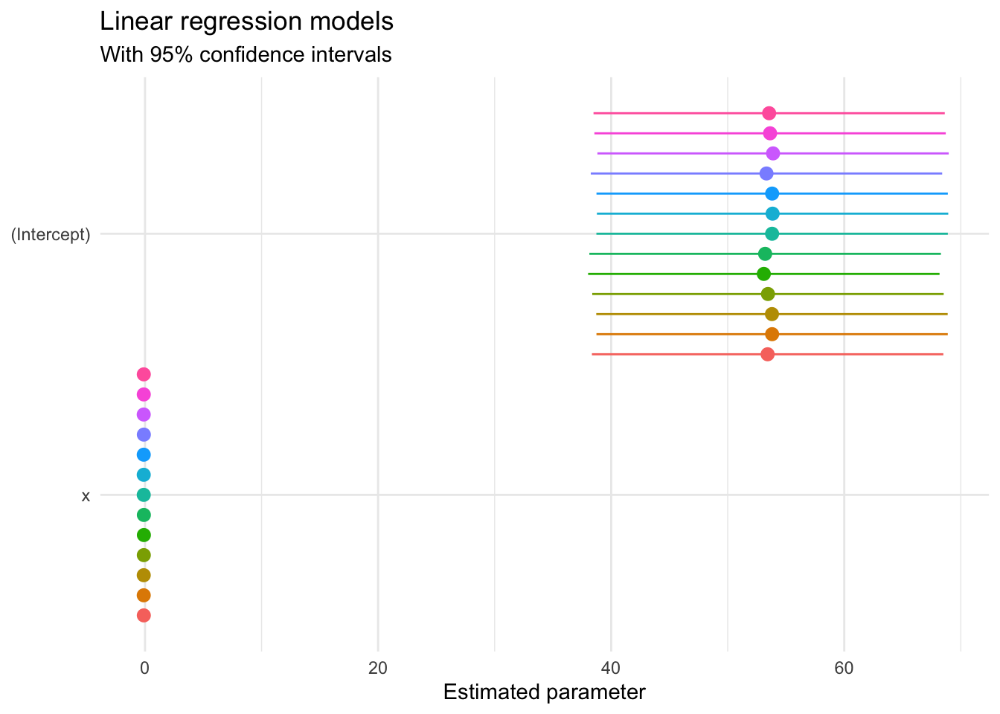
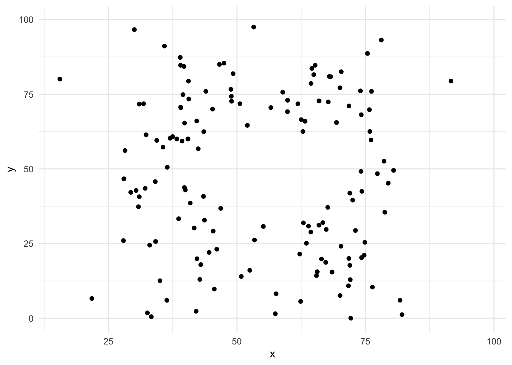
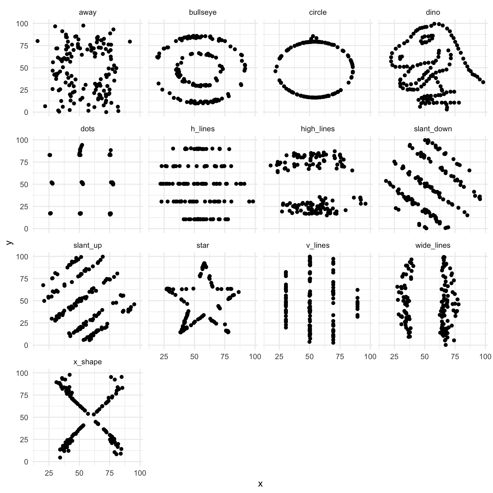

Research methods classes in graduate school generally teach important skills such as probability and statistical theory, regression, analysis of variance (ANOVA), maximum likelihood estimation (MLE), etc. While these are important methods for analyzing data and assessing research questions, sometimes drawing a picture (aka visualization) can be more precise than conventional statistical computations.1
Consider the following 13 data sets. What are the corresponding relationships between \(X\) and \(Y\)? Using traditional metrics, the relationships appear identical across the samples:
## `summarise()` ungrouping output (override with `.groups` argument)| ID | \(N\) | \(\bar{X}\) | \(\bar{Y}\) | \(\sigma_{X}\) | \(\sigma_{Y}\) | \(R\) |
|---|---|---|---|---|---|---|
| 1 | 142 | 54.3 | 47.8 | 16.8 | 26.9 | -0.064 |
| 2 | 142 | 54.3 | 47.8 | 16.8 | 26.9 | -0.069 |
| 3 | 142 | 54.3 | 47.8 | 16.8 | 26.9 | -0.068 |
| 4 | 142 | 54.3 | 47.8 | 16.8 | 26.9 | -0.064 |
| 5 | 142 | 54.3 | 47.8 | 16.8 | 26.9 | -0.060 |
| 6 | 142 | 54.3 | 47.8 | 16.8 | 26.9 | -0.062 |
| 7 | 142 | 54.3 | 47.8 | 16.8 | 26.9 | -0.069 |
| 8 | 142 | 54.3 | 47.8 | 16.8 | 26.9 | -0.069 |
| 9 | 142 | 54.3 | 47.8 | 16.8 | 26.9 | -0.069 |
| 10 | 142 | 54.3 | 47.8 | 16.8 | 26.9 | -0.063 |
| 11 | 142 | 54.3 | 47.8 | 16.8 | 26.9 | -0.069 |
| 12 | 142 | 54.3 | 47.8 | 16.8 | 26.9 | -0.067 |
| 13 | 142 | 54.3 | 47.8 | 16.8 | 26.9 | -0.066 |
\(X\) and \(Y\) have the same mean and standard deviation in each dataset, and the correlation coefficient (Pearson’s \(r\)) is virtually identical. If we estimated linear regression models for each dataset, we would obtain virtually identical coefficients (again suggesting the relationships are identical):

But what happens if we draw a picture?2


Remarkably each of the datasets have the same summary statistics and linear relationships, yet they are drastically different in appearance! A good picture tells the reader much more than any table or text can provide.
## ─ Session info ───────────────────────────────────────────────────────────────
## setting value
## version R version 4.0.3 (2020-10-10)
## os macOS Catalina 10.15.7
## system x86_64, darwin17.0
## ui X11
## language (EN)
## collate en_US.UTF-8
## ctype en_US.UTF-8
## tz America/Chicago
## date 2021-01-06
##
## ─ Packages ───────────────────────────────────────────────────────────────────
## package * version date lib source
## assertthat 0.2.1 2019-03-21 [1] CRAN (R 4.0.0)
## backports 1.2.1 2020-12-09 [1] CRAN (R 4.0.2)
## blogdown 0.21 2020-12-18 [1] local
## bookdown 0.21 2020-10-13 [1] CRAN (R 4.0.2)
## broom * 0.7.3 2020-12-16 [1] CRAN (R 4.0.2)
## callr 3.5.1 2020-10-13 [1] CRAN (R 4.0.2)
## cellranger 1.1.0 2016-07-27 [1] CRAN (R 4.0.0)
## cli 2.2.0 2020-11-20 [1] CRAN (R 4.0.2)
## colorspace 2.0-0 2020-11-11 [1] CRAN (R 4.0.2)
## crayon 1.3.4 2017-09-16 [1] CRAN (R 4.0.0)
## datasauRus * 0.1.4 2018-09-20 [1] CRAN (R 4.0.0)
## DBI 1.1.0 2019-12-15 [1] CRAN (R 4.0.0)
## dbplyr 2.0.0 2020-11-03 [1] CRAN (R 4.0.2)
## desc 1.2.0 2018-05-01 [1] CRAN (R 4.0.0)
## devtools 2.3.2 2020-09-18 [1] CRAN (R 4.0.2)
## digest 0.6.27 2020-10-24 [1] CRAN (R 4.0.2)
## dplyr * 1.0.2 2020-08-18 [1] CRAN (R 4.0.2)
## ellipsis 0.3.1 2020-05-15 [1] CRAN (R 4.0.0)
## evaluate 0.14 2019-05-28 [1] CRAN (R 4.0.0)
## fansi 0.4.1 2020-01-08 [1] CRAN (R 4.0.0)
## farver 2.0.3 2020-01-16 [1] CRAN (R 4.0.0)
## forcats * 0.5.0 2020-03-01 [1] CRAN (R 4.0.0)
## fs 1.5.0 2020-07-31 [1] CRAN (R 4.0.2)
## generics 0.1.0 2020-10-31 [1] CRAN (R 4.0.2)
## gganimate * 1.0.7 2020-10-15 [1] CRAN (R 4.0.2)
## ggplot2 * 3.3.3 2020-12-30 [1] CRAN (R 4.0.2)
## gifski 0.8.6 2018-09-28 [1] CRAN (R 4.0.0)
## glue 1.4.2 2020-08-27 [1] CRAN (R 4.0.2)
## gtable 0.3.0 2019-03-25 [1] CRAN (R 4.0.0)
## haven 2.3.1 2020-06-01 [1] CRAN (R 4.0.0)
## here 1.0.1 2020-12-13 [1] CRAN (R 4.0.2)
## hms 0.5.3 2020-01-08 [1] CRAN (R 4.0.0)
## htmltools 0.5.0 2020-06-16 [1] CRAN (R 4.0.2)
## httr 1.4.2 2020-07-20 [1] CRAN (R 4.0.2)
## jsonlite 1.7.2 2020-12-09 [1] CRAN (R 4.0.2)
## knitr * 1.30 2020-09-22 [1] CRAN (R 4.0.2)
## lifecycle 0.2.0 2020-03-06 [1] CRAN (R 4.0.0)
## lubridate 1.7.9.2 2020-11-13 [1] CRAN (R 4.0.2)
## magrittr 2.0.1 2020-11-17 [1] CRAN (R 4.0.2)
## memoise 1.1.0 2017-04-21 [1] CRAN (R 4.0.0)
## modelr 0.1.8 2020-05-19 [1] CRAN (R 4.0.0)
## munsell 0.5.0 2018-06-12 [1] CRAN (R 4.0.0)
## pillar 1.4.7 2020-11-20 [1] CRAN (R 4.0.2)
## pkgbuild 1.2.0 2020-12-15 [1] CRAN (R 4.0.2)
## pkgconfig 2.0.3 2019-09-22 [1] CRAN (R 4.0.0)
## pkgload 1.1.0 2020-05-29 [1] CRAN (R 4.0.0)
## prettyunits 1.1.1 2020-01-24 [1] CRAN (R 4.0.0)
## processx 3.4.5 2020-11-30 [1] CRAN (R 4.0.2)
## progress 1.2.2 2019-05-16 [1] CRAN (R 4.0.0)
## ps 1.5.0 2020-12-05 [1] CRAN (R 4.0.2)
## purrr * 0.3.4 2020-04-17 [1] CRAN (R 4.0.0)
## R6 2.5.0 2020-10-28 [1] CRAN (R 4.0.2)
## Rcpp 1.0.5 2020-07-06 [1] CRAN (R 4.0.2)
## readr * 1.4.0 2020-10-05 [1] CRAN (R 4.0.2)
## readxl 1.3.1 2019-03-13 [1] CRAN (R 4.0.0)
## remotes 2.2.0 2020-07-21 [1] CRAN (R 4.0.2)
## reprex 0.3.0 2019-05-16 [1] CRAN (R 4.0.0)
## rlang 0.4.10 2020-12-30 [1] CRAN (R 4.0.2)
## rmarkdown 2.6 2020-12-14 [1] CRAN (R 4.0.2)
## rprojroot 2.0.2 2020-11-15 [1] CRAN (R 4.0.2)
## rstudioapi 0.13 2020-11-12 [1] CRAN (R 4.0.2)
## rvest 0.3.6 2020-07-25 [1] CRAN (R 4.0.2)
## scales 1.1.1 2020-05-11 [1] CRAN (R 4.0.0)
## sessioninfo 1.1.1 2018-11-05 [1] CRAN (R 4.0.0)
## stringi 1.5.3 2020-09-09 [1] CRAN (R 4.0.2)
## stringr * 1.4.0 2019-02-10 [1] CRAN (R 4.0.0)
## testthat 3.0.1 2020-12-17 [1] CRAN (R 4.0.2)
## tibble * 3.0.4 2020-10-12 [1] CRAN (R 4.0.2)
## tidyr * 1.1.2 2020-08-27 [1] CRAN (R 4.0.2)
## tidyselect 1.1.0 2020-05-11 [1] CRAN (R 4.0.0)
## tidyverse * 1.3.0 2019-11-21 [1] CRAN (R 4.0.0)
## tweenr 1.0.1 2018-12-14 [1] CRAN (R 4.0.0)
## usethis 2.0.0 2020-12-10 [1] CRAN (R 4.0.2)
## vctrs 0.3.6 2020-12-17 [1] CRAN (R 4.0.2)
## withr 2.3.0 2020-09-22 [1] CRAN (R 4.0.2)
## xfun 0.19 2020-10-30 [1] CRAN (R 4.0.2)
## xml2 1.3.2 2020-04-23 [1] CRAN (R 4.0.0)
## yaml 2.2.1 2020-02-01 [1] CRAN (R 4.0.0)
##
## [1] /Library/Frameworks/R.framework/Versions/4.0/Resources/libraryExample drawn from The Datasaurus Dozen by Justin Matejka and George Fitzmaurice.↩︎
Source code from Recreating the Datasaurus Dozen Using tweenr and ggplot2 and Reanimating the Datasaurus.↩︎